用户权限
用户权限主要包括是否允许查看用户的主题和帖子、是否提示用户自己有未审核的主题或者帖子、帖子最小字数、帖子最大字数等相关用户权限设置和评分设置，下面我们一一详细讲解。
一、用户权限的设置
1、允许查看用户的主题和帖子 选择是并选择相应的版块那么在个人空间将出现“主题”模块和链接。如下图所示：
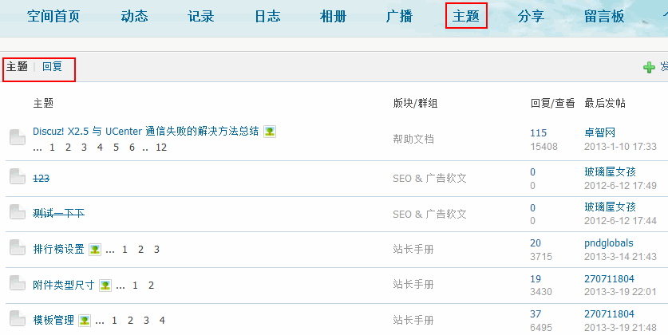这里将可以查看用户的主题和帖子。
2、是否提示用户自己有未审核的主题或者帖子 选择“是”，用户如果有正在审核的主题，将可以在帖子列表页看到提示如下图所示：
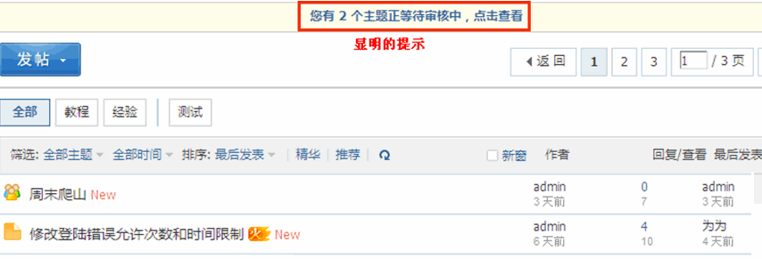3、允许查看会员列表 如果选择“是”可以在前台查看到会员列表，如下图所示：
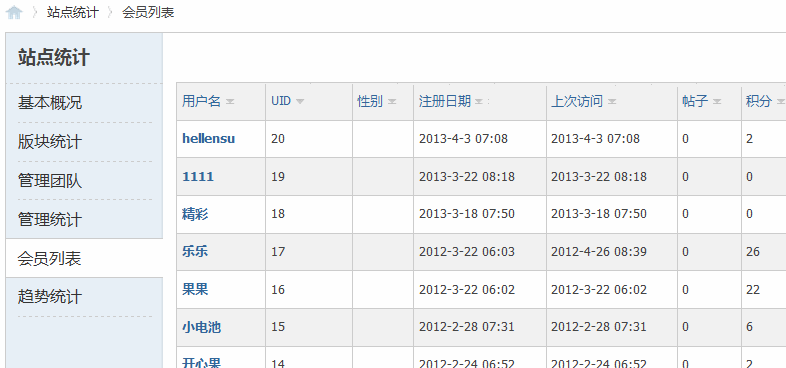4、帖子最小字数(字节) 管理组成员可通过“发帖不受限制”设置而不受影响。 发帖子不受限制可以在后台=>用户=>管理组=>基本设置中开启，如下图所示：
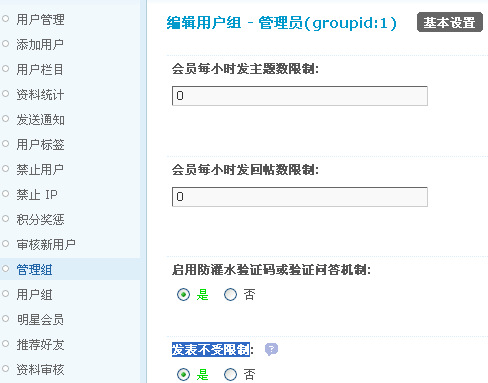0 为不限制。如果发帖子时，帖子内容小于这里的字节数将会提示如下。
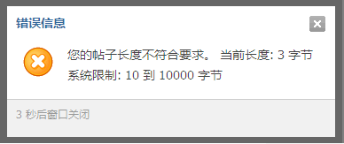5、手机客户端发帖最小字数(字节)
是否单独为手机客户端设置发帖的最小字节数，0 为不单独设置，如这里设置为3，那么手机上网的会员，发帖内容将不能小于3个字节。
6、帖子最大字数 管理组成员可通过“发帖不受限制”设置而不受影响。0 为不限制，如果发帖子时，帖子内容大于这里的字节数将会提示如下。
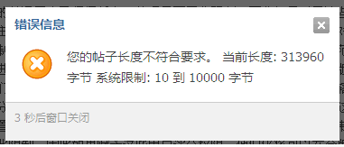7、允许用户随时编辑的帖子类型 包括普通主题、投票主题、商品主题、悬赏主题、活动主题和辩论主题被选中的帖子类型将不受用户组中的“编辑帖子时间”限制，任何时刻都可以编辑。
8、启用帖子补充功能 开启后当用户无法编辑自己的帖子时，可以补充内容。 举例：用户组中设置了“编辑帖子时间”限制，如下图所示：
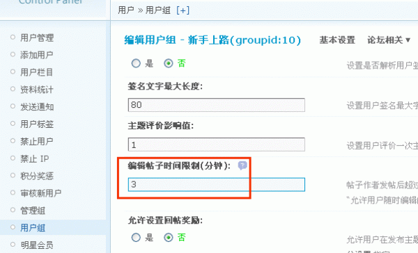当发表帖子的时间超过这里的时间限制后，将不能编辑自己发表的帖子，这时可以使用帖子补充功能，效果如下：
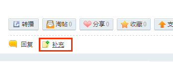点击帖子下方的“补充”链接，即可填写补充内容，补充内容填写完成后提交，该补充内容将显示在主题内容的下方：
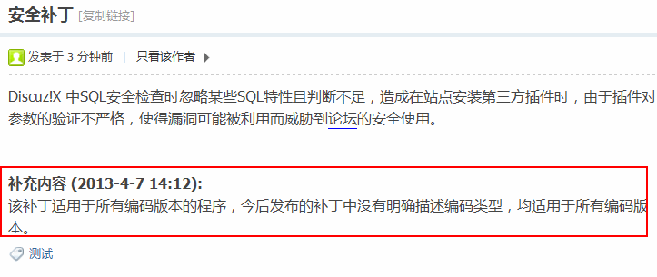9、投票最大选项数 设定发布投票包含的最大选项数，默认为20项。
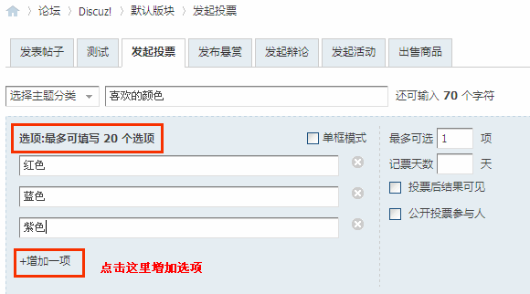9、编辑帖子附加编辑记录 在 60 秒后编辑帖子添加“本帖由 xxx 于 xxxx-xx-xx 编辑”字样。管理员编辑不受此限制
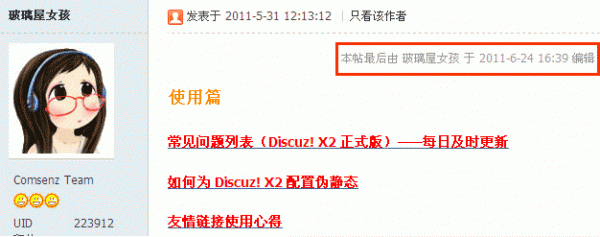二、评分相关设置
1、评分时间限制(小时) 帖子发表后超过此时间限制其他用户将不能对此帖评分，版主和管理员不受此限制，0 为不限制。 同时还需要在用户组中开启评分该功能才有效。 开启用户组评分可以到【后台】=>【用户】=>【用户组】=>【其它】=>【积分设置】中进行开启，如下图所示：
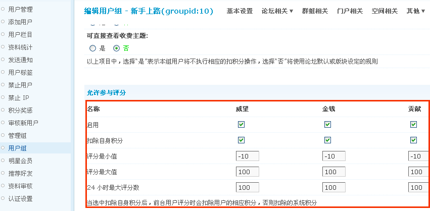注意：当选中扣除自身积分后，前台用户评分时会扣除用户的相应积分，否则扣除的系统积分。
2、版主评分限制 设置版主只能在自身所管辖的版块范围内对帖子进行评分。本限制只对版主有效，允许评分的普通用户及超级版主、管理员不受此限制，因此如果赋予这些用户评分权限，他们仍将可以在全版块范围内进行评分。
如果版主在非管辖的版块内对会员的帖子进行评分，提示如下：
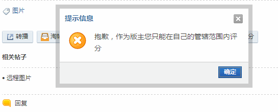3、允许重复评分 选择“是”将允许用户对一个帖子进行多次评分，默认为“否”
4、允许用户编辑帖子时删除帖子 选择“是”将允许用户编辑帖子时删除帖子
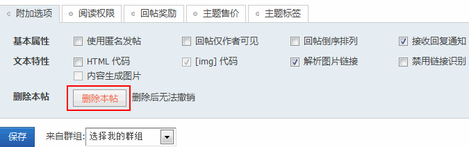5、帖子中[hide]标签最大有效天数 距发帖日期天数超过此设置时标签自动失效，0或不填为不限制
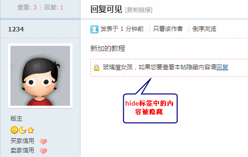如果这里设置了有效天数，[hide]标签将自动失效，隐藏内容可见
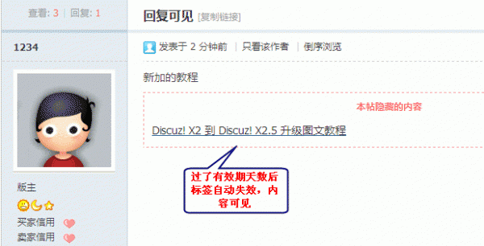